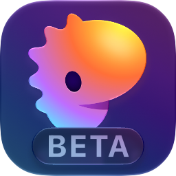

leaf opens PDFs, EPUBs, markdown and web articles as clean pages in your terminal's own colors, and reviews git diffs side by side. Search, highlight, draw, listen, or ask an agent without leaving the page.
$curl -fsSL https://leaf.dipxsy.app | sh
macOS 11+ and Linux with glibc 2.35+ (x86_64 or arm64; Linux needs ALSA, as desktops have). Installs leaf to ~/.local/bin, or updates the copy already on your PATH; leaf upgrade keeps it current. With Homebrew, brew upgrade leaf does. Elsewhere, with Rust: cargo install leaf-reader.

Ships as a native Rex pluginleaf open. 19 seconds, no sound.One command, leaf open, for anything you read. One more, leaf diff, for code you review.
Turned into text with real headings and whole paragraphs. Running headers are dropped and images stay inline.
Laid out into pages like a PDF, with images inline. Reopens at the page you left.
GitHub's flavor, with tables, task lists, footnotes, alerts and mermaid diagrams. Front matter stays hidden.
Readability keeps the article and drops the menus, banners and sidebar. Links show their URL.
An arXiv /abs/ link opens the full paper. A GitHub blob/…/*.md link opens the raw file. A URL that serves a PDF opens as one.
Your working tree, a branch, any range, a .patch file, or a GitHub pull request link.
Each tab plays a short scene. Click one to jump to it.
Removed code on the left, added code on the right, changed words picked out. Select lines, leave a comment, and send it to your agent or post it to the pull request.
$leaf diffUnstaged changes$leaf diff --stagedStaged changes$leaf diff --branchThis branch against its base$leaf diff main...HEADAny revision or range$leaf diff changes.patchA .diff or .patch file, no repo needed$leaf diff github.com/owner/repo/pull/12A pull request, commit or compare linkleaf draws with your terminal's palette. Press i to paint images in your text color, so diagrams sit on the page like text.
PDFs and EPUBs reopen at the page you left. Markdown files and articles reopen at the line, at any window width.
Headings come from font size, paragraphs are joined back across lines, and tables, lists and figures keep their shape.
Kitty, iTerm2 or Sixel, whichever your terminal answers to. Anything else gets colored half blocks.
Code blocks use Highlights, with lexers built to WebAssembly. Blocks from a PDF are colored only when the language is clear.
mermaid blocks are drawn as diagrams through Pele, run under bun or node. Without either, you see the source.
A phrase that breaks over two lines still matches. Case doesn't matter, and n wraps round the whole book.
Yellow, green, blue, pink, purple and red on keys 1 to 6. Highlights are saved with your place.
A wobbly line comes out straight and a rough loop becomes a triangle, rectangle, ellipse or circle. Handwriting stays as drawn. Strokes stick to the word they start on.
Microsoft Edge's read-aloud voices, searchable by name, language or gender. Speed from 0.5× to 4× with no change in pitch.
The screen holds the text and a single dim line: 15 / 613 · 2%. The title goes to the terminal tab.
In a PDF or EPUB, press m to bookmark a page and ' to list them. The footer says when the page you're on is bookmarked.
Only the lines on screen are drawn, and syntax colors fill in for the hunks you can see.
leaf comments --json prints every saved review comment with its file, side, line range and state.
Progress, highlights, drawings and comments live in one SQLite file under ~/.local/share/leaf.
Press ? in leaf for the full list, and ! for a short guide to highlighting and drawing.
h l)leaf ships as a native Rex plugin. Run leaf plugin install and every leaf action shows up in Rex's command palette. Documents and diffs open in a pane beside you, and you can ask the agent already running in your session.
Press @ on a selection, or ctrl enter on a diff comment. leaf finds the pane in your Rex session that runs a known agent, pastes the prompt and submits it. Set LEAF_AGENT_PANE to a block id to pick one. Outside Rex, or with no agent open, leaf copies the prompt to your clipboard.
Read aloud, pause, stop, change speed or skip a sentence in the leaf pane while you stay where you are.
Then run leaf open on a PDF, an EPUB, a README or a link.
$curl -fsSL https://leaf.dipxsy.app | sh